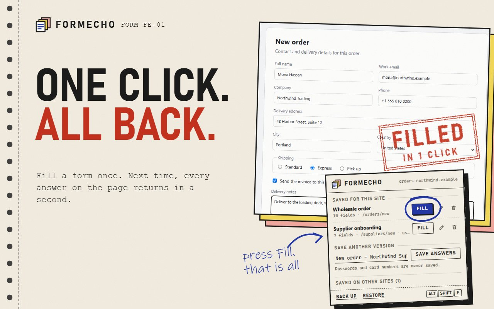
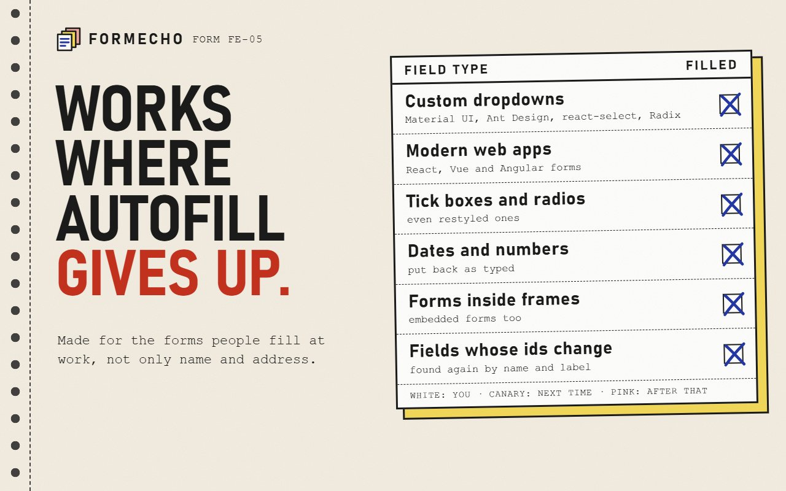

FORMECHO · FORM FE-COMPARE
Autofill with
no daily limit.
FormEcho is a free Chrome extension. Fill a web form once, save it, and next time one click puts every answer back. No cap on how many times a day, and no account.
Chrome Web Store: submitted 26 November 2026, in review. The install link goes here when it is approved.

Looking for a Lightning Autofill alternative?
Lightning Autofill is the best-known form filler for Chrome and does more than FormEcho. Its free plan now stops at 10 fills a day. If that limit is the only thing in your way, FormEcho may be all you need. If you rely on its scripting, the paid plan there is the better choice. The table says which is which.
| FormEcho | Lightning Autofill, free | Lightning Autofill, paid | |
|---|---|---|---|
| Price | Free | Free | $4.99 a month (Plus), $9.99 a month (Pro) |
| Fills per day | No limit | 10 | No limit |
| Account or sign-up | None | Not checked | Needed to subscribe |
| Save a filled form, refill in one click | Yes | Yes (macros) | Yes (macros) |
| Custom dropdowns (Material UI, Ant Design, react-select, Radix) | Yes, tested on their public demo pages | Not tested by us | Not tested by us |
| Text expansion and text clips | No | Yes | Yes |
| Your own JavaScript automation | No | No | Pro only |
| Sync between devices | No. Back up to a file and restore it | No | Yes, through Google Sheets |
| Fills CAPTCHAs | No, on purpose | No | reCAPTCHA autofill, Pro only |
| Where your saved answers live | Only in Chrome on your device. No server | Not checked | Google Sheets when sync is on |
| Passwords and card numbers | Never saved | Not checked | Not checked |
| Browsers | Chrome and other Chromium browsers | Chrome, Edge, Firefox | Chrome, Edge, Firefox |
| Languages | English now; ten more in the next version | Not checked | Not checked |
Lightning Autofill's prices, plan contents and browser list were read from its own website on 26 November 2026. "Not checked" means exactly that: we did not verify it, so we do not claim it either way. If a line is wrong or out of date, tell us and it will be corrected.
What FormEcho does not do yet
- No text snippets or text expansion.
- No filling the moment a page opens. You press Fill or Alt+Shift+F.
- No sync between computers, only a backup file you move yourself.
- No Firefox version.
- It cannot import forms saved in another extension. You save each form once more.
What it does well

- Saves every answer on the page with one button, and names the fields it could not find when it fills.
- Works on React, Vue and Angular forms, including dropdowns that are not real select boxes.
- Keeps several versions of one form, for example one per customer.
- Reads a page only when you press Save, Fill or the shortcut. It has no access to your browsing history.
Will it stay free?
Saving forms and filling them are free with no daily limit, and that will not be taken back. If paid features come later, they will be additions, most likely sync between devices.
Another free option
QuickForm is a free record-and-replay form filler aimed at testers and developers. It is worth trying next to FormEcho; use whichever handles your forms better.
Home · Privacy policy · Support
Lightning Autofill is a product of Tohodo LLC. QuickForm belongs to its own developers. FormEcho is not affiliated with either.